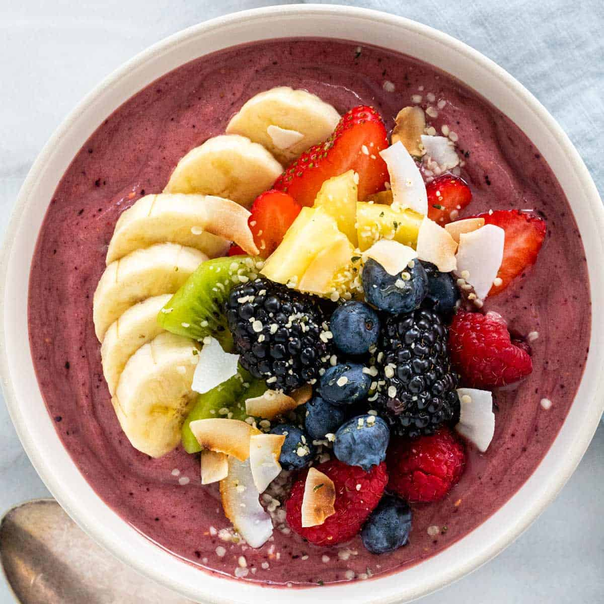

Acai Bowl

Description
This is a delicious breakfast smoothie bowl. Which can be
sweeten with honey, but you can use agave as well for a vegan
version or not sweeten it at all. Top the smoothie bowls with some
granola for crunch, nuts, or other berries of your choosing.
Ingredients
- 7 ounces frozen unsweetened acai pulp, partially defrosted in
refrigerator overnight
- 2 medium ripe frozen bananas
- 1 cup blueberries
- ¾ cup almond milk, or more as needed
- 2 teaspoons honey, or to taste
Toppings
- 1 medium banana, sliced
- 2 tablespoons fresh blueberries, or to taste
- 1 tablespoon pomegranate seeds, or to taste
- 1 tablespoon large coconut flakes, or to taste
Steps
- Combine acai, bananas, blueberries, almond milk, and honey
in a blender. Blend until smooth. Smoothie should have a thick
consistency, like frozen yogurt.
- Pour into 2 bowls and top with banana slices, blueberries,
pomegranate seeds, and coconut.